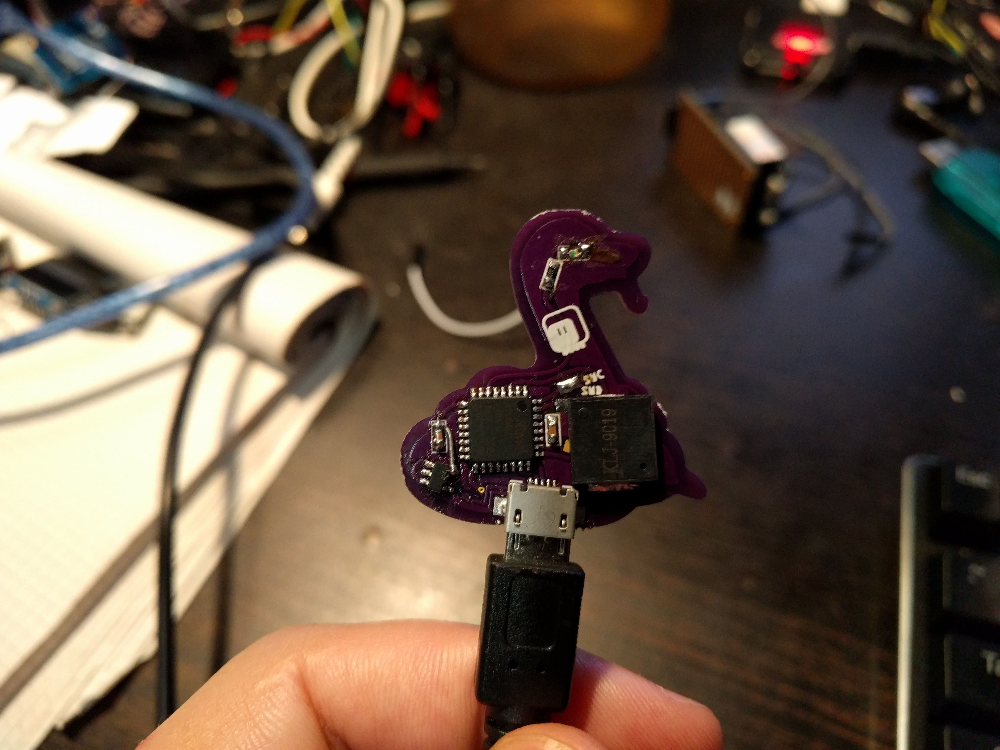

Firmware¶
Published on 2017-12-21 in Blinka.
So I finally sat dawn, assembled the second version of Blinka, and flashed it with custom firmware. The firmware has only the pins I’m using, and has a number of modules removed (like analogio) to make room for touchio and audioio. Also usb_hid — so it can act as a keyboard or mouse. Two of blinka’s segments are also touchpads.

In other news, I finally got a hold of the vector files for Blinka, so a bigger version with a coin cell on it is in the works (and I will probably enter it in the contest too).